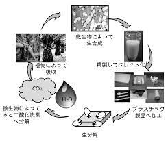

図1
物性を向上させる方法として, 第2成分モノマーを導入する共重合体化が挙げられる. 微生物の種類や用いる炭素源を変えることにより, さまざまな分子構造をもつ共重合ポリエステルが見出されており, 共重合体の種類や組成を変化させることにより, 結晶性の硬いプラスチックから弾性に富むゴム状まで, 多様な物性を示すことが報告されている（表 2）.現在,代表的な共重合ポリエステルとして, 3-ヒドロキシバレリル酸（3HV）を導入したポリ［（R）-3- ヒドロキシブチレート-co（- R）-3-ヒドロキシバレレート］ （P（3HB-co-3HV））, 3-ヒドロキシヘキサン酸（3HH）を導 入した ポリ［（R）-3-ヒドロキシブチレート-co（- R）-3-ヒドロ キシヘキサノエート］（P（3HB-co-3HH））, 4-ヒドロキシブ タン酸（4HB）を導入した ポリ［（R）-3-ヒドロキシブチレート-co-4-ヒドロキシブチレート］（P（3HB-co-4HB））などが 挙げられる.
PHAの中でも最初に注目されたものは、最も単純な構造を有するpoly［（R）-3-hydroxybutyrate]（P3HB）という種類のものである。 P3HB は、時間がたつとボロボロになってしまう性質を持っていたため、材料化するのが難しいと考えられてきた。 このため、多くの研究者が、改善の手法を研究してきた。例えば、微生物の種類の選定、与える餌（砂糖、油、有機酸など。いわゆる炭素源）の選定、 培養の方法、遺伝子組換え 技術の活用、化学的な修飾、添加物の検討、加工法の開発や改善などである。 このような、試みは現在でも精力的に取り組まれており、日々、微生物産生ポリエステルの性能や生産性は向上している。
バイオポールは白色またはベージュ色の不透明プラ
生産方法:最初の生分解性プラとして有名なバイオポールはこの種の微生物(アルカリゲネスユートロファスなど)が作り出す「３－ヒドロキシ酪酸(HB)」と, 「３－ヒドロキシ吉草酸(HV)」を共重合体(PHB/V)として材料化したものである. 微生物の中には代謝の結果として体内にプラスチックの一種,ポリエステルを溜め込む者がいる. 元々,微生物自身の保全やエネルギーにする目的で溜め込んだものを利用している. 余剰穀物デンプンなどを微生物の餌として与え,脂肪細胞のように太ったところでポリエステルだけを取っている. このやり方は効率的ではないものの,生分解性は優れている.コストも高いのが難点.
あらゆる生分解性プラの中でもトップに位置するであろう生分解性能である. 一般の庭先の硬い土壌でも,市販の園芸用土でも,水中でも、常に最も優れた分解性を示した. 重要：初めから捨てられる目的で作られていない.生分解するからといってむやみに廃棄していいわけではない.他のプラスチック問題を引き起こす可能性がある. 性質：HB／HVの配合比により物性に変化を付け加えることが可能であり,HB側が多いと強靭になり,HV側が多いと柔軟になる.
菌は自然界の土壌中や水中に広く分布しているが,通常これにグルコースを炭素源として与えるとともにバクテリアの成長に必要な元素である窒素,酸素,リン,硫黄のうち, そのひとつを制限して培養を行いPHBを効率的に生合成させる.グルコースとともに他の炭素源(プロピオン酸)を共存させると, 菌は3-ヒドロキシ酪酸(3HB)と3-ヒドロキシ吉草酸(3HV)のランダム共重合体を生産することが発見された. 図-1にコポリマーのポリ(3HB-co-3HV)の化学構造式を示した.プロピオン酸の添加量で3HVのモル分率を調節することができるが, 一連のコポリマーではHV分率の増大とともに結晶化度も下がり(約65%,HV分率20%時),柔らかくてじょうぶな樹脂となる. またHV分率の増大とともに融点も下がり,熱分解温度(約200℃)との差が拡大することで加工時の 熱安定性も増した. 図一2に機械的性質のHV分率依存性を示し,図-3に融点のHV分率依存性を示した.PHBは比較的硬くかつもろいポリマーであったが, コポリマーはHVの含有率を上げ ることでフレキシブルかつタフなポリマーとなる. また融点も下がることでポリエチレンやポリプロピレンのような成型温度(140℃～16O℃)となり,溶融時の熱劣化を押えて成型加工ができるようになった.

生産した微生物自身はこのPHAを分解することが出来るのだが,PHAを生産しない微生物もPHAを分解する能力を有することがある. PHAを生産する菌は多くの土壌に存在するため,これらの死骸や生産したPHAを糧にする微生物も多いためだと考えられる. このように,PHAは『生分解性』と『バイオマス由来』という二つの性質を有しているため, 自然の材料から作製され自然に還っていく環境調和型や環境循環型の材料といえる(図4).
温度特性 流動性 固化とバリ ブレンド 材料パージ 寸法安定性 予備乾燥など生産するのに時間とコストがかかる.
バイオポールは再生産可能な農産物資源を出発物質としてつくられている. 今後,グルコースよりさらに安価な糖蜜等を原料にすることで省資源に寄与できる.またポリマーの生産のための多量のエネルギー消費も必要としないことから, 省エネルギーに貢献する材料でもある.材料の生産プロセスが従来の石油合成化学に依存せずかつ自然界の生物分解でもとの炭酸ガスと水にもどるといった エコロジーでのバランスを成立させることができる.
一方,生分解されることのない合成プラスチックは自然界に流出することで環境破壊を引き起こしている. バイオポールの性質の中でもっとも重要なものはその生分解性である.表一2に各種自然環境下でのバイオポール製フィルムの消失速度を示した. バイオポールは土壌中,-嫌気性水中,好気性水中,海水中でバクテリアによる生物分解を受けるが, その速度は自然界の様々の因子によって影響されることがわかっている.温度, pH,酸素濃度,イオン強度,菌体数等の環境因子が変動するため分解速度は一様ではない. また分解速度は成型物の厚み,表面積,ポリマーの分子量,結晶化度,気孔率,ブイラー等の添加物の有無によっても変わる.
PHAは,様々な化学構造を持つものがあり,150以上の化学構造が同定されているというが,その中でも,実用化に近いものはP3HB共重合体である. PHA共通の問題点として,上記で示した物性的な問題のほかに価格の問題がある. 一般的な食品包装や成形品などに使用されるPEやPPなどのポリマーの価格は0.60～0.87ドル/ポンド（1ポンド＝0.45kg)前後であるが, PHA類の生産コストはこれの3～4倍高く,2.25～2.75ドル/ポンドの間と推定されている（2015 年時点）.